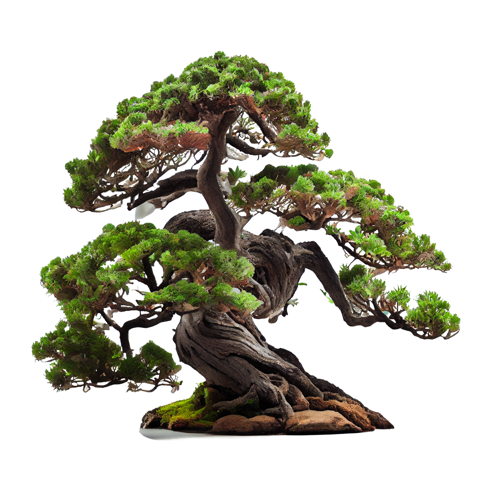
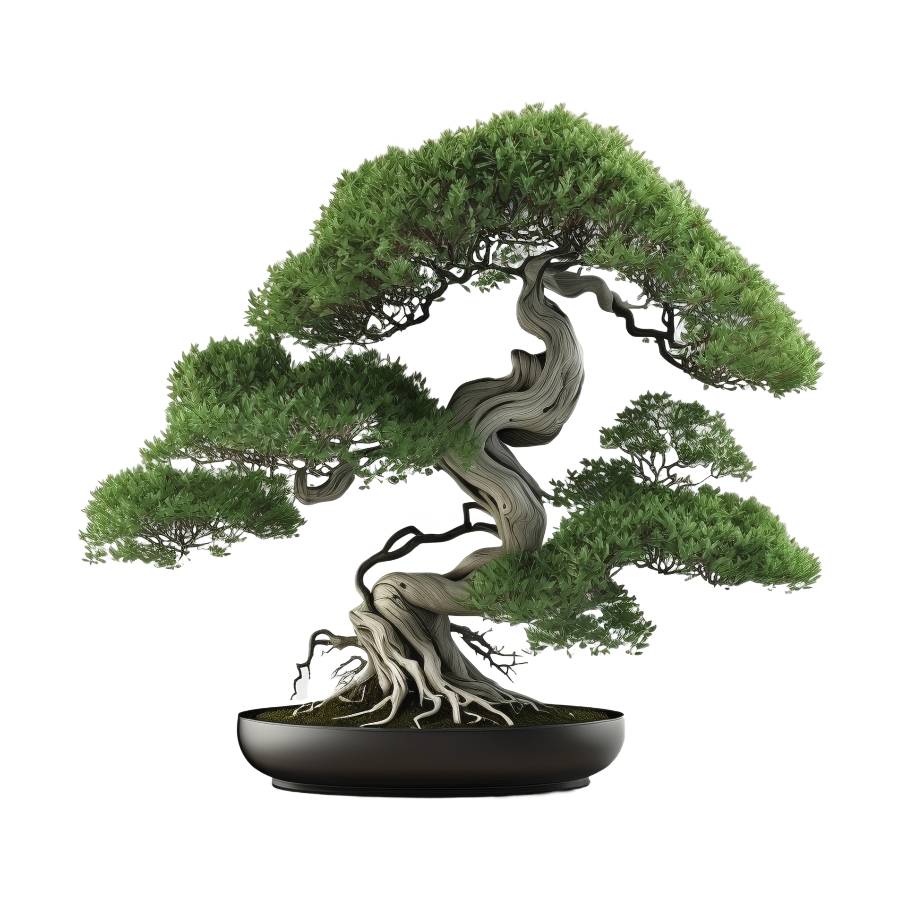

The Artistry of Bonsai: Shaping Nature's Wonders

Bonsai is not merely about miniaturizing trees; it is a unique form of art that blends horticulture and
sculpture. The meticulous process of shaping, pruning, and training a tree to resemble its full-sized
counterpart is an art form in itself. Each bonsai tells a story through its form, which can range from
graceful
and windswept to ancient and gnarled. The artistry lies in the careful consideration of every branch, leaf,
and
root, resulting in a living masterpiece that evolves over time.
BLAH BLAH ADD MORE INFO HERE
Patience and Precision: The Bonsai Care Ritual

Bonsai demands patience and precision, making it a contemplative and meditative practice. Caring for a bonsai
tree involves maintaining the delicate balance of soil moisture, sunlight, and nutrients. Pruning and wiring
are
essential techniques used to shape the tree, requiring a keen eye for detail and a steady hand. The slow,
deliberate process of nurturing a bonsai tree rewards the enthusiast with a deep connection to nature and an
opportunity for personal growth.
BLAH ADD ANOTHA ONE
Bonsai Styles: A World of Diversity

Bonsai offers a diverse range of styles, each with its own character and history. From the elegant and
refined
formal upright style (Chokkan) to the dramatic cascade style (Kengai), and from the windswept style
(Fukinagashi) to the whimsical literati style (Bunjin), there is a bonsai style to suit every taste.
Exploring
these various styles allows enthusiasts to appreciate the breadth of creativity within the bonsai community
and
provides endless inspiration for their own creations.
ANOTHA ONE